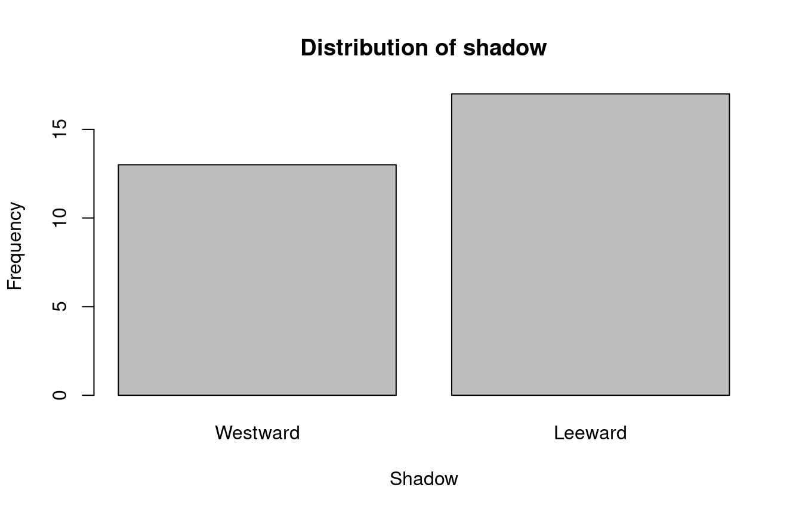
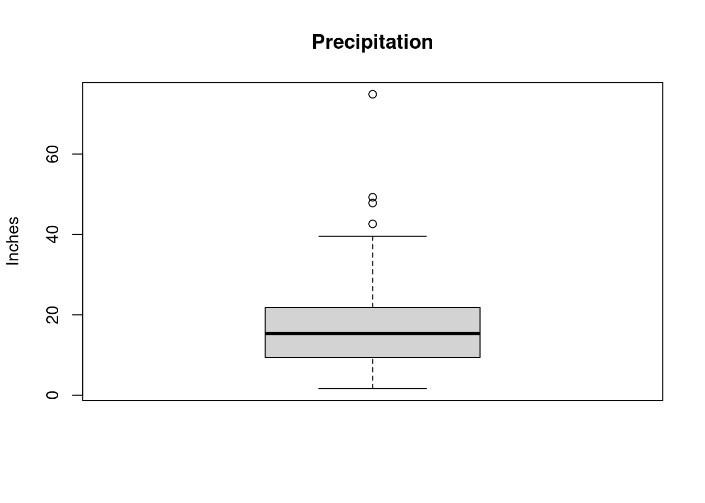
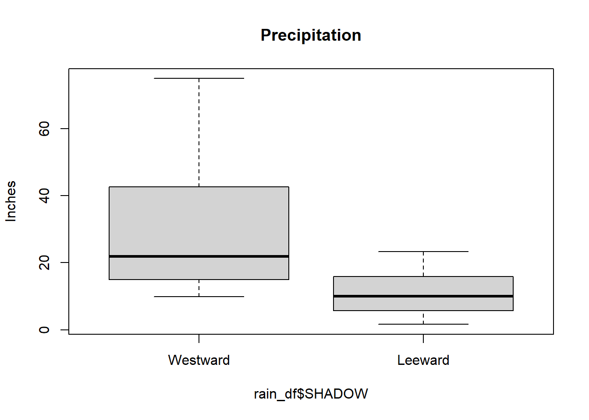
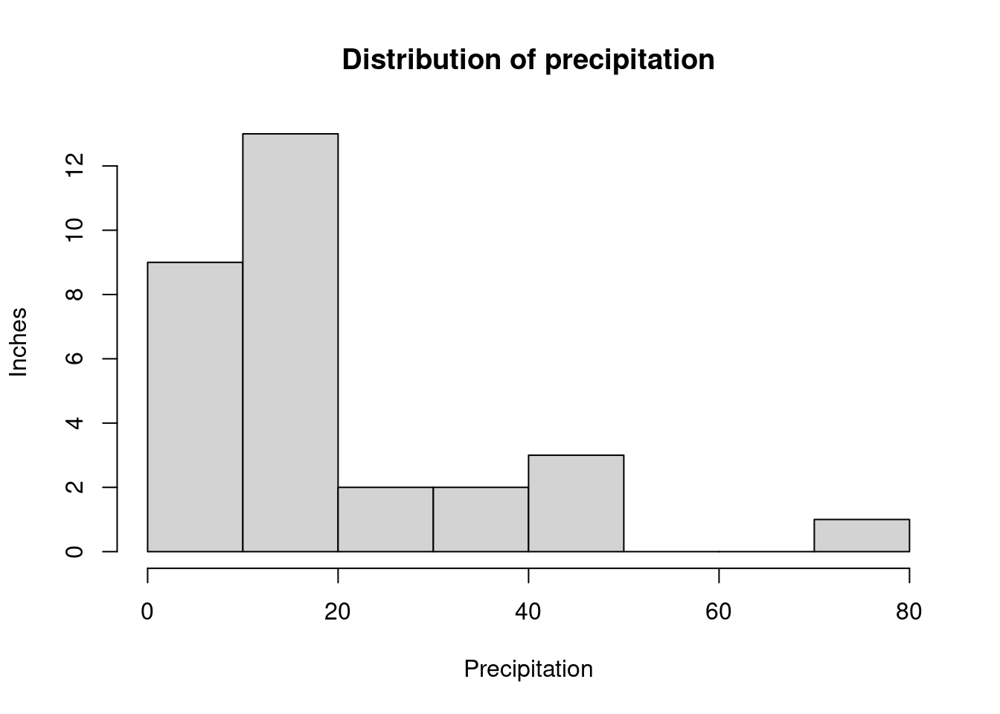

1 Introduction to R
Author: Joslin Goh, Trang Bui
Last Updated: Feb 04, 2021
1.1 R and RStudio
R is a software environment for statistical computing and graphics. Unlike other statistical software, R is free. Besides built-in functions, additional packages for solving many different statistical or application problems are made and maintained by contributors around the world. This makes R an attractive and popular statistical tool nowadays.
RStudio is an integrated development environment (IDE) for R. It is easier to work with R using RStudio.

Figure 1.1: The RStudio interface
The interface of RStudio shown in Figure 1.1 contains four panes:
- Source Editor,
- Console,
- Workspace Browser, and
- Files (and Plots, Packages, Help, and Viewer).
The four panes can be positioned differently based on personal preference. Figure 1.1 shows the default position. In this section, we will mainly be using the Source Editor and Console panes. Readers are encouraged to refer to other resources on the use of other panes.
1.2 Basic R
1.2.1 Calculating with R
In its simplest form, R can be used as a calculator. In the R Console area, type:
The following will be printed in the R Console area:
[1] 3Subtraction can be done in a similar way:
[1] -5Other basic operations such as multiplication, division, and powers are also included.
[1] 234[1] 13.33333[1] 8Some basic operations involve built-in functions in R. For example,
Square root:
[1] 5Logarithm:
[1] 1Natural logarithm:
[1] 2.302585
1.2.2 Variables
Variables are useful when they need to be used repeatedly or to be recalled in the future.
For example, suppose we are interested in evaluating \[ \frac{e^{1-9.2315468}}{1-e^{1-9.2315468}}, \] we can store the repeated value \(9.2315468\) as a variable before performing the calculation.
To store the value as the variable \(x\), we can type
Note that:
In the Console pane, nothing is returned.
In the Environment tab under the Workspace Browser pane, \(x\) appears together with the value it represents. This shows that the current workspace recognizes \(x\) as \(9.2315468\).
Now if we try typing \(x\) in the Console, we will see the value it represents.
[1] 9.231547
Back to our example, we wanted to evaluate \[ \frac{e^{1-9.2315468}}{1-e^{1-9.2315468}}, \] Since \(x = 9.2315468\) is in our work environment, we can now type
[1] 0.0002661952In R, there are built-in variables, which are called default variables in R. The number \(\pi\) is recognized as pi. Another default variable is the imaginary number, i.e \(\sqrt{-1}\), which is recorded as i in R.
1.2.3 Vectors
Oftentimes, we encounter sequences of numbers during data analysis. For example, the height of 10 students, the grades of the ECON 101 students in the Fall term, the age of the attendees, etc.
In R, sequences of numbers can be recorded as vectors.
Suppose there are five people in a class. The ages of the people in the class are: \[ 18, 21, 19, 20, 21 \] We can create a vector for our record as below.
In the Workspace Browser pane, we can see the variable age with the values that we have given. And if we type age in the Console pane, we get these values printed in the Console.
Vectors may not appear to be useful for many since most of the popular functions are ready for use. But for those intending to create their own R functions, it is important to understand how to create and manipulate vectors. Many comparators and logical operators such as those discussed in Section 1.2.1 work on both vectors and scalars. These calculations will be element-wise.
1.3 Basic Data Analysis Workflow
1.3.1 Reading Data into R
1.3.1.1 Setting Working Directory
To start, it is important to inform R the directory that the data file is stored. For Mac/Windows users of RStudio, choose Session > Set Working Directory > Choose Directory.
The function setwd() can also be used to set the working directory if the directory string is available. For example,
will set the working directory to “D:/”.
1.3.1.2 Importing the Data
In the real world, data are recorded in different formats such as Excel spreadsheet (xls), Comma Separated Values (csv) or Text (txt). Each row of a data file is an observation while each column is a variable or a feature.
Data are imported into the R Environment using functions such as read.csv() and read.table(). Imported data are stored as a data frame object. In this section, we will look at two data sets: caliRain.csv and drinks.csv.
Suppose we saved the data sets in a subfolder called data in the working directory. We can import both data sets caliRain.csv and drinks.csv into the R environment and save them as data frames called drinks_df and rain_df respectively.
1.3.1.3 A Look at the Data
It is important to take a look at the data set imported into the environment before performing the analysis. To view rain_df as a table,
Loading required package: htmltoolsLoading required package: xfun
Attaching package: 'xfun'The following objects are masked from 'package:base':
attr, isFALSELoading required package: mimeThe function head() can also show the first few rows of the data set.
STATION PRECIP ALTITUDE LATITUDE DISTANCE SHADOW
1 Eureka 39.57 43 40.8 1 1
2 RedBluff 23.27 341 40.2 97 2
3 Thermal 18.20 4152 33.8 70 2
4 FortBragg 37.48 74 39.4 1 1
5 SodaSprings 49.26 6752 39.3 150 1
6 SanFrancisco 21.82 52 37.8 5 1The caliRain.csv file contains daily rainfall recorded at numerous meteorological stations monitored by the state of California. The variables recorded are:
STATION: Name of the station,PRECIP: precipitation (inches),ALTITUDE: altitude (feet),LATITUDE: latitude (feet),DISTANCE: distance to the Pacific Ocean (miles), andSHADOW: slope face (1: Westward, 2:Leeward).
The variables STATION and SHADOW are categorical variables, whereas the remaining are continuous variables.
1.3.1.4 Accessing the Data Frame
Oftentimes, we are interested in accessing an individual column (or variable) within the data frame. For example, if we are interested in the PRECIP variable in the data set caliRain.csv (which is now stored as rain_df). There are two ways to access the column:
Use the dollar sign followed by the name of the variable.
[1] 39.57 23.27 18.20 37.48 49.26 21.82 18.07 14.17 42.63 13.85 9.44 19.33 [13] 15.67 6.00 5.73 47.82 17.95 18.20 10.03 4.63 14.74 15.02 12.36 8.26 [25] 4.05 9.94 4.25 1.66 74.87 15.95Use the number of the column in the data set.
[1] 39.57 23.27 18.20 37.48 49.26 21.82 18.07 14.17 42.63 13.85 9.44 19.33 [13] 15.67 6.00 5.73 47.82 17.95 18.20 10.03 4.63 14.74 15.02 12.36 8.26 [25] 4.05 9.94 4.25 1.66 74.87 15.95
Similarly, there are times we want to investigate a particular row (or observation). Suppose we are interested in the 10th observation, type
STATION PRECIP ALTITUDE LATITUDE DISTANCE SHADOW
10 Salinas 13.85 74 36.7 12 2We can also access a specific cell in the data. If we want to access the precipitation of the 5th observation, we can do either one of the following:
Accessing a random variable, an observation or a specific value coming from an observation are all useful for data management and manipulation purpose.
1.3.1.5 Modifying the Data Frame
Sometimes, we want to make changes to the data frame such as
- making changes to existing records,
- adding new observations or variables, or
- removing outliers from the data set.
If we want to change the existing records, we need to identify which records we are interested to change.
- a variable, i.e. a column, or
- a specific observation.
1.3.1.5.1 Modifying a Variable
To modify a variable, we need to
- identify the name or the column of the variable to access it in the data frame,
- decide on the modification or conversion, and
- decide on how to store the new variable.
We recommend storing the conversion as a new variable in the data frame to avoid confusion.
Suppose we are interested to analyze DISTANCE in meters (\(1 \tx{ ft} = 0.3048 \tx{ m}\)). We can make the conversion and save it as a new column called DISTANCE_M in the data set.
1.3.1.5.2 Modifying a Specific Observation
To modify a specific observation, we need to
- identify how to access the variable in the data frame,
- decide on the modification, and
- decide on how to store the new variable.
Suppose the distance for Eureka station is entered incorrectly and is supposed to be 1.5 feet instead. To replace this value, type
1.3.1.6 Data Structure
The structure that R stores the data can be viewed using the function str().
'data.frame': 30 obs. of 7 variables:
$ STATION : chr "Eureka " "RedBluff " "Thermal " "FortBragg " ...
$ PRECIP : num 39.6 23.3 18.2 37.5 49.3 ...
$ ALTITUDE : int 43 341 4152 74 6752 52 25 95 6360 74 ...
$ LATITUDE : num 40.8 40.2 33.8 39.4 39.3 37.8 38.5 37.4 36.6 36.7 ...
$ DISTANCE : num 1.5 97 70 1 150 5 80 28 145 12 ...
$ SHADOW : int 1 2 2 1 1 1 2 2 1 2 ...
$ DISTANCE_M: num 0.305 29.566 21.336 0.305 45.72 ...Here, the variable SHADOW is recorded as a numeric value. This is not an accurate depiction of the data set.
To ensure the analysis can be done properly, we need to convert the values in SHADOW into categorical values in the data set. To do so, we use the function factor().
Here, the numerical values 1 and 2 are set to “Westward” and “Leeward”, respectively.
Now, when we check the structure of the data set after the transformation, the variable SHADOW is now stored as a categorical variable (or factor).
'data.frame': 30 obs. of 7 variables:
$ STATION : chr "Eureka " "RedBluff " "Thermal " "FortBragg " ...
$ PRECIP : num 39.6 23.3 18.2 37.5 49.3 ...
$ ALTITUDE : int 43 341 4152 74 6752 52 25 95 6360 74 ...
$ LATITUDE : num 40.8 40.2 33.8 39.4 39.3 37.8 38.5 37.4 36.6 36.7 ...
$ DISTANCE : num 1.5 97 70 1 150 5 80 28 145 12 ...
$ SHADOW : Factor w/ 2 levels "Westward","Leeward": 1 2 2 1 1 1 2 2 1 2 ...
$ DISTANCE_M: num 0.305 29.566 21.336 0.305 45.72 ...1.3.2 Descriptive Statistics
We will use the PRECIP variable to demonstrate how common statistics are computed.
Mean or average of a sequence of numbers can be obtained using the function
mean().[1] 19.80733Median of a sequence of numbers can be obtained using the function
median().[1] 15.345Variance and standard deviation of a sequence of numbers can be obtained using the functions
var()andsd()respectively.[1] 276.2639[1] 16.62119The minimum and maximum of a set of numbers can be obtained through functions
min()andmax().[1] 1.66[1] 74.87The function
range()also shows the minimum and maximum values.[1] 1.66 74.87
1.3.3 Data Visualization
There is a wide variety of plots that can be created using R, but we will focus on some of our favorites:
- bar graphs: show the distributions of categorical variables,
- boxplots: show the five-number summaries of continuous variables, and
- histograms: show the distributions of continuous variables.
1.3.3.1 Categorical Variables
In order to create bar graphs, we need to summarize data using tables.
The numerical summary of a categorical variable are usually summarized in a table:
Westward Leeward
13 17 A cross-tabulation table (or contingency table) can also be done. Suppose we are interested to create cross-tab for the variables hasMilk and temp in the drinks_df, we can do the following:
Cold Hot
Milk 20 10
Nonmilk 6 0Sometimes it is more useful to report the proportions, which can be converted into percentages. To do so, we use the function prop.table().
Westward Leeward
0.4333333 0.5666667 For a contingency table, the default prop.table() function will output the proportions based on the entire data set.
Cold Hot
Milk 0.5555556 0.2777778
Nonmilk 0.1666667 0.0000000Suppose we are interested in the percentages of the hot drinks that contain milk, we will want to report the proportion by column (Temperature).
Cold Hot
Milk 0.7692308 1.0000000
Nonmilk 0.2307692 0.0000000These values are the proportions of drinks which contains milk (or not) conditioning on whether the drink is cold or hot, i.e., the values are normalized by the columns.
1.3.3.2 Bar Graphs
Bar graphs are commonly used to visualize categorical variables. We can make a bar graph from the count table using the function barplot() in R.

1.3.3.3 Boxplots
The boxplot is a visual representation of the five-number summary that can give us a sense of the distribution of the variable.
- minimum,
- first quartile, \(Q_1\),
- second quartile, i.e., median,
- third quartile, \(Q_3\), and
- maximum.
Potential outliers are shown as dots outside the boxplots.
The boxplot of PRECIP shows some potential outliers.

Side-by-side boxplots are commonly used to visualize the relationship between a continuous variable and a categorical variable. The following is the boxplot of the precipitation by shadow.

In the side-by-side boxplots, notice that there are no potential outliers. Compared to the whole data, certain observations can be considered as outliers. But if we group the data by SHADOW, the data are not outliers in their groups.
1.3.3.4 Histograms
Histograms are commonly used to visualize the distribution of continuous variables. When looking at histograms, pay attention to
- the shape: symmetric vs asymmetric,
- the center, and
- the spread.
To plot precipitation in a histogram,
hist(rain_df$PRECIP,
main = "Distribution of precipitation",
xlab = "Precipitation", ylab = "Inches"
)
Notice that there is no space in between the bars like in the bar graph. This is because the graph is for continuous variables instead of categorical variables.
1.4 Some Coding Tips
1.4.1 Source Editor
It will be hard to remember and troublesome to re-write all the codes created in the Console every time, especially if there are many lines of code. The Source Editor allows us to write and save all codes into R code files. The lines of codes in the Source Editor are not processed by R unless executed by the user.
There are many ways the codes in the Code Editor can be executed:
- Select the codes to process, click Run on the top right corner of the Source Editor.
- For Windows users, run the selected codes by pressing Ctrl + Enter. For Mac users, use Command + Enter.
- If we only want to run one line of code, place the cursor at the line of code, and use either one of the two ways mentioned above.
We recommend typing the codes in the Source Editor and then executing the codes. This way, there is a copy of what was done for future references.
1.4.2 Commenting
Comment the codes! To do so, use #. R does not process anything behind #. For example,
Everyone uses comments differently, but generally, comments are useful for understanding what is the code for and sometimes, the expected output.
To comment off a block of code, select the lines, and press Ctrl + Shift + C. Doing this a second time, the code section will be uncommented.
In RStudio, if the following is done in the Code Editor:
a triangle button will appear next to the line numbers at the beginning and end of the code section. Clicking the button will hide or unhide the section.
1.4.3 Saving the Environment
When quitting R or RStudio, we can choose to save the Environment and History that we were working with in the files called .RData and .RHistory respectively. When we open the R code file next time, the two files will be automatically loaded.
However, it is recommended not to save the Environment in the default way. Instead, start in a clean environment so that older objects do not remain in the environment any longer than they need to. If that happens, it can lead to unexpected results.
For those who want to save the Environment for future use, we recommend saving the Environment using the function save.image() rather than using the default files .RData. If we only want to save certain values, we can use the function save() and then load the saved Environment later using the load() function.
1.4.4 Installing and Loading Libraries
The R user community creates functions and data sets to share. They are called packages or libraries. The packages are free and can be installed as long as there is access to the Internet.
To install a library, say ggplot2, you can either use the RStudio interface, or you can do it from the command line as follows:
You only need to do this once in a while, e.g., when you install a new version of R. Then, to use the package, include the following code at the beginning of the file:
Loading required package: ggplot2This command needs to be run every time you want to use the package in a new R session.
1.4.5 Good Coding Practices
- Start each program with a description of what it does.
- Load all required packages at the beginning.
- Consider the choice of working directory.
- Use comments to mark off sections of code.
- Put function definitions at the top of the file, or in a separate file if there are many.
- Name and style code consistently.
- Break code into small, discrete pieces.
- Factor out common operations rather than repeating them.
- Keep all of the source files for a project in one directory and use relative paths to access them.
- Have someone else review the code.
- Use version control.
1.5 Getting Help
Before asking others for help, it is generally a good idea for you to try to help yourself.
1.5.1 R Documentation
R has extensive documentation and resources for help. To read the documentation of a function, add a question mark before the name of a function.
For example, to find out how to use the function round(), try
The description of the function and examples of how to use it will appear in the Files pane. In this example, as shown in the documentation, the function round() rounds the values in its first argument to the specified number of decimal places.
1.5.2 Online Resources
There are a lot of basic functions or default variables that have not been mentioned so far. When analyzing data, we often encounter situations in which we need to use unknown or unfamiliar functions. In this case, we often rely on online search engines to find those functions. It is common practice to use online resources in real-world data analysis. Hence, readers are encouraged to explore the online resources.